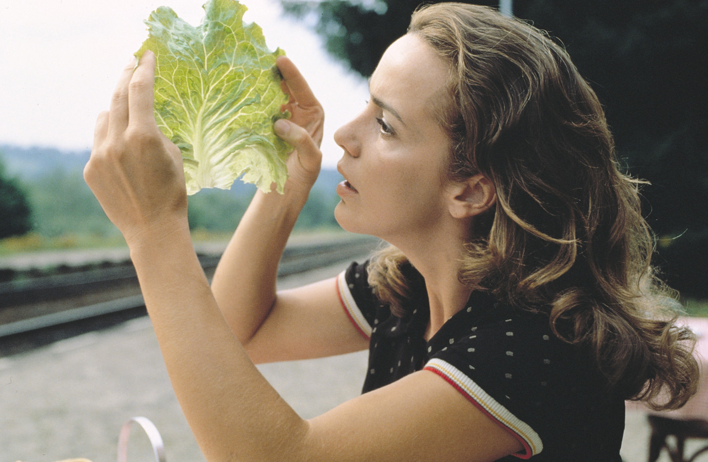

The Nutrition diaries.
The function of proteins is to be used for tissue growth and repair, but when carbohydrates and calories are lacking, proteins can be consumed for fuel. The human body's own proteins are constantly being broken down into amino acids and used throughout its systems.
The human body is mostly made of proteins, and proteins are made of amino acids — permutations of carbon, oxygen, hydrogen, nitrogen and sometimes sulphur. There are 22 amino acids in total and all but 9 can be synthesized, the Essential Amino Acids.
To be used for growth and repair, a protein needs have access to the full sequence of required essential amino acids. If an essential amino acid is missing, the unusable remaining amino acids are broken down into fats or sugars.
Examples of foods with essential amino acid content of at least 70% of a complete protein(see Limiting Amino Acids) are oats, garbanzo beans, sunflower seeds, buckwheat, red/white/black beans, rice, peanuts and pumpkin seeds. There are also high-quality proteins in green beans, swiss chard, broccoli, mustard greens, asparagus and potatoes but in lesser quantity.
There are a few things in life that are as transformative and transhumanistic as nutrition
Soy products have within them 100% of a complete protein, or the correct ratio of essential amino acids for the body to use in tissue growth and repair.
The high-quality protein foods can be made whole by combining with other ingredients, but the basic optimal combinations is Beans with grains, nuts or seeds.
The doctor of the future will give no medicine, but will instruct his patient in the care of the human frame in diet and in the cause and prevention of diseases.Thomas Edison, 1903
08Q02— Started eating vegan06K06— Started eating vegetarian
incoming ogasawara ascetism nutrition grimgrains